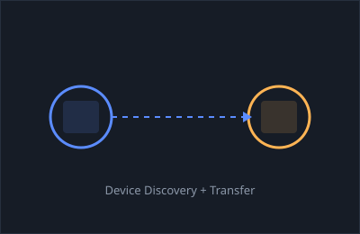
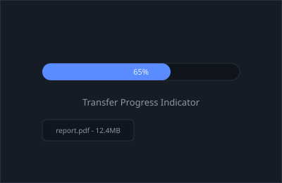
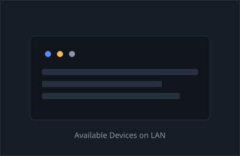
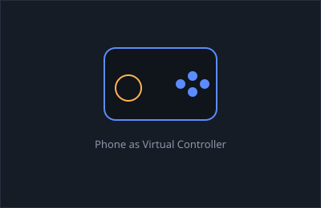
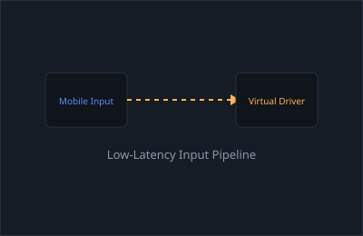
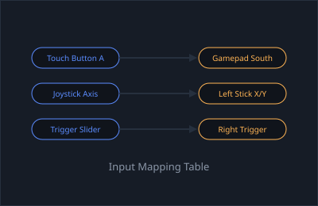

I'm working toward a career in IT, with a particular interest in cybersecurity and in helping people solve the
technology problems that get in the way of their day. I like the process of learning how computer systems actually
work under the hood, from troubleshooting a single device to understanding how networks connect and protect everything
behind the scenes. My goal is to build a strong, practical understanding of computer systems and networking, and to
keep growing that knowledge throughout my career.
Business Management -> Information Technology
Education
Education history
Institution
Degree
Duration
Estrella Mountain Community College
Associate of Applied Science, Business Management
2023 – 2025
NAU
Bachelor of Science, Information Technology
2025 – Expected 2029
Skills
Software & Tools
HTML & CSS
Computer Troubleshooting
Networking Fundamentals
Windows & Mac Support
Order & Database Systems
Microsoft Office
Business & Soft Skills
Problem-Solving
Customer Communication
Organization
Attention to Detail
Team Collaboration
Adaptability
Projects
Local Network File Transfer App
A desktop utility that lets devices on the same local network discover each other and
send files directly, without relying on cloud storage or email as a middleman. The app
scans the LAN to list available devices, opens a direct socket connection between sender
and receiver, and streams the file in chunks so larger transfers do not have to sit fully
in memory. It also handles the basics that make a transfer tool actually usable: showing
transfer progress, confirming when a file finishes writing to disk, and gracefully handling
a dropped connection mid-transfer.

Peer-to-peer device discovery

Chunked transfer with live progress

List of discoverable LAN devices
Mobile-to-PC Controller Driver
A tool that turns a phone into a working game controller for a PC by sending input data
over the local network. The mobile side captures button presses, joystick movement, and
triggers, then packages that input and sends it to the PC with low enough latency to feel
responsive during actual gameplay. On the PC side, a virtual controller driver takes that
incoming data and presents it to the operating system as a standard controller, so games
and other software can read it the same way they would a physical gamepad, with no extra
configuration needed on the game's end.

Phone mapped as a virtual gamepad

Low-latency input pipeline

Touch controls mapped to gamepad inputs
Experience
Work experience history
Company
Position
Duration
DHL
Warehouse Associate
2024 – Present
On the Job
Worked directly with computer systems to communicate with customers about their orders and
manage order records from start to finish, including data entry, tracking order status,
resolving discrepancies, and keeping accurate digital records. This role built a practical,
everyday familiarity with business software and gave me hands-on experience troubleshooting
issues before they became bigger problems.